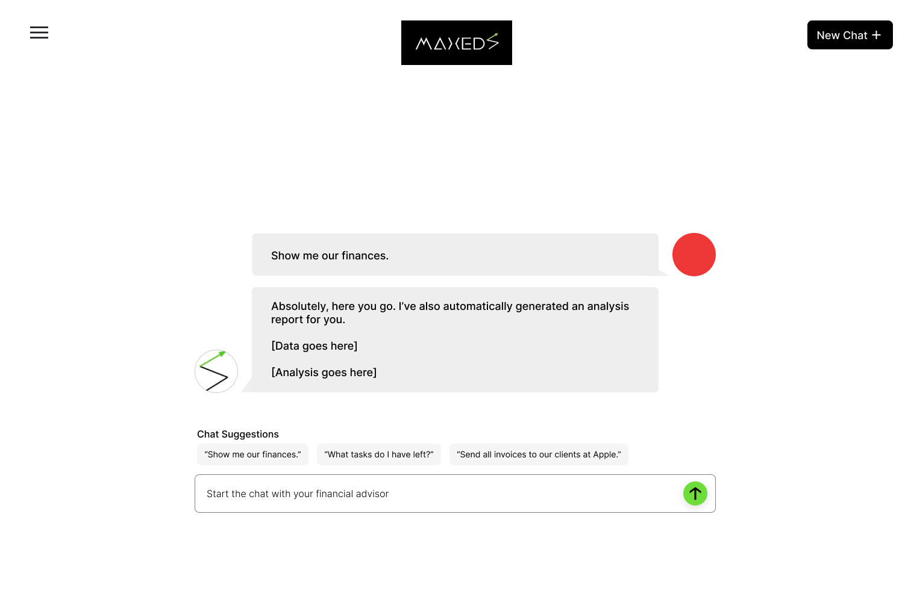
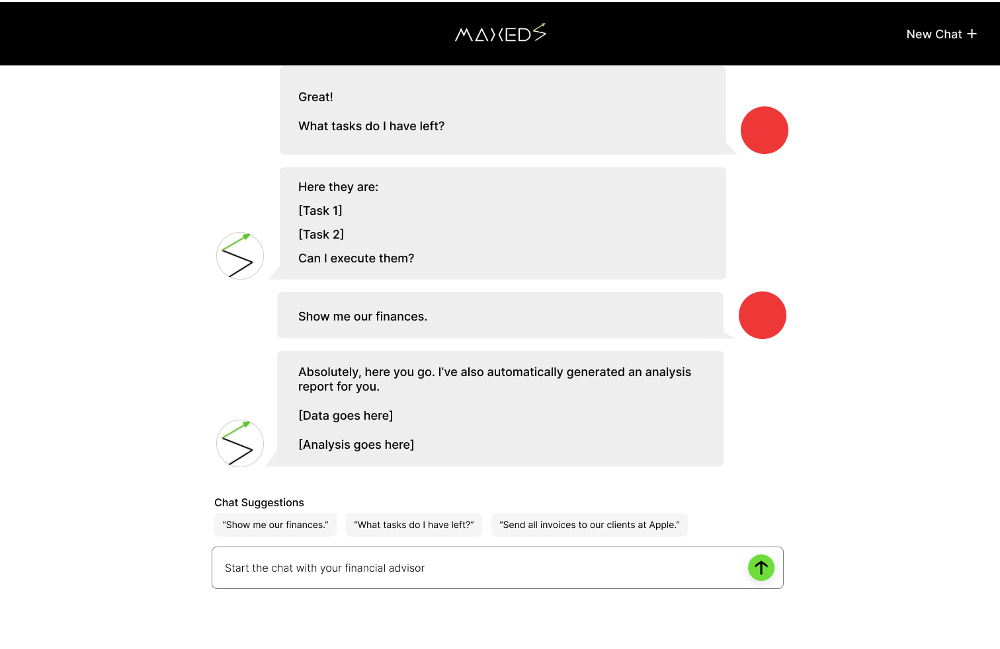

Project Overview
MaxedS is an AI start-up based in Naperville, Illinois, we are currently developing a financial agent chatbot.
Since joining the team in August of 2023, I've contributed to the product as the primary front-end engineer focusing on usability, accessibility, and responsive design.
Project Type: UX/UI engineering
Wireframing
 
Figma file
Links & Source Code
MaxedS Website, Github Repository AI Financial Agent Chatbot, Github Repository
Next Steps
As mentioned, this project is currently a work in progress. The next step in my UI/UX development process involves the critical task of data visualization.
The end goal for the product is to have the AI financial agent be able to transform raw data into comprehensible, actionable insights. This will include designing charts, graphs, and interactive visual representations that not only enhance the user’s understanding of the underlying data but also enable them to effectively convey MaxedS’s findings to stakeholders.